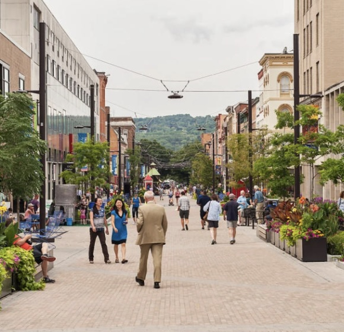
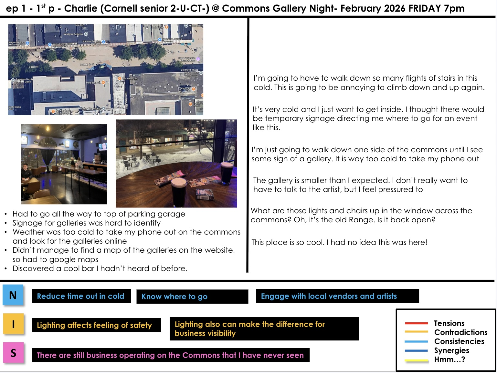
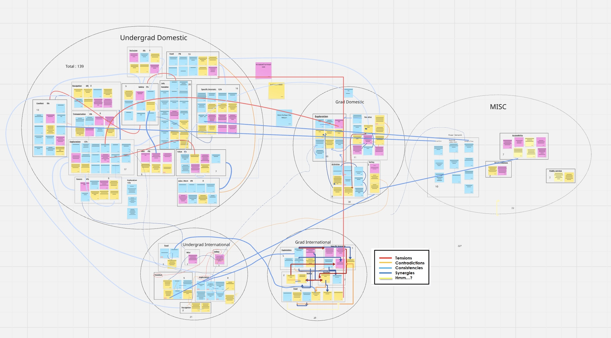
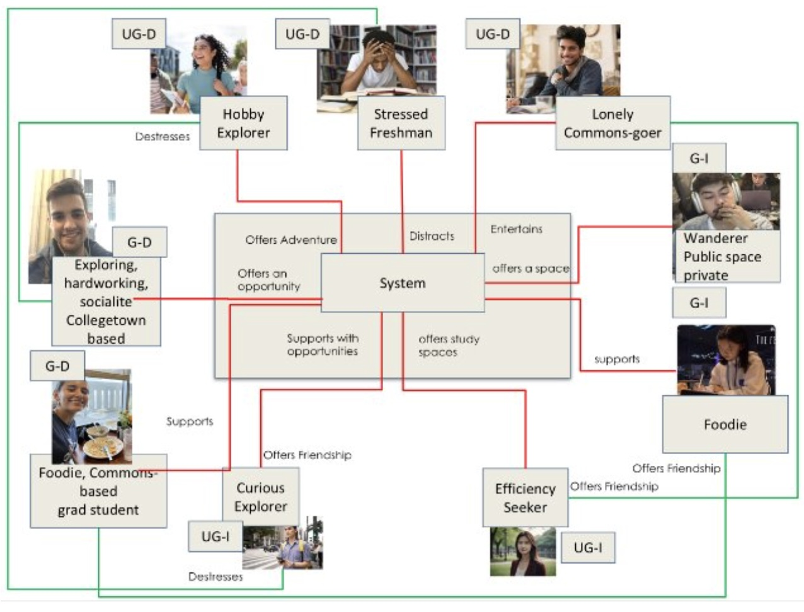
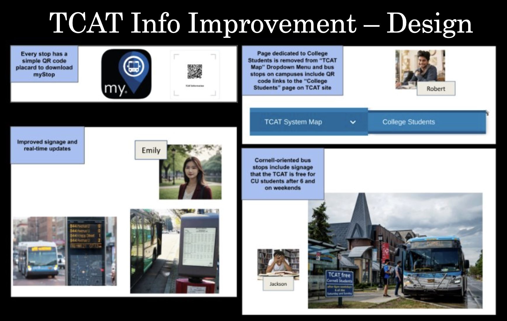
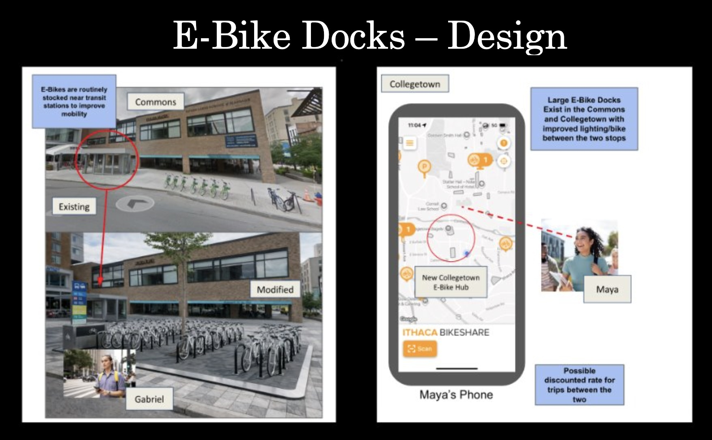
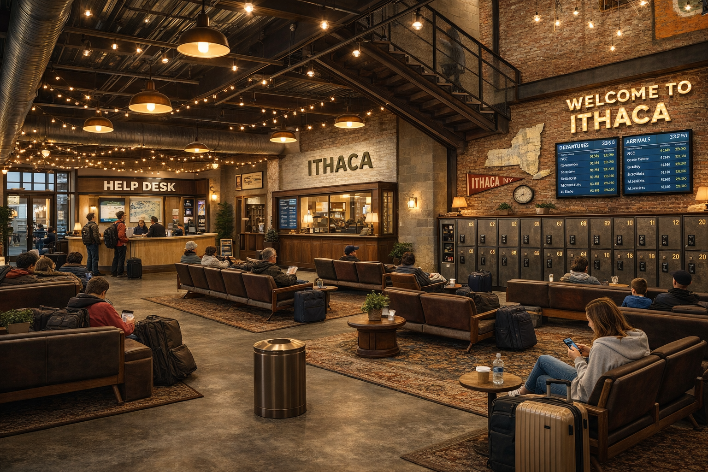
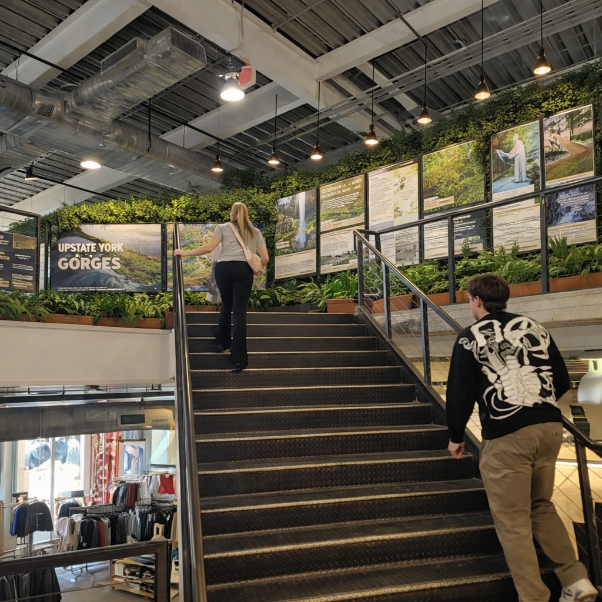
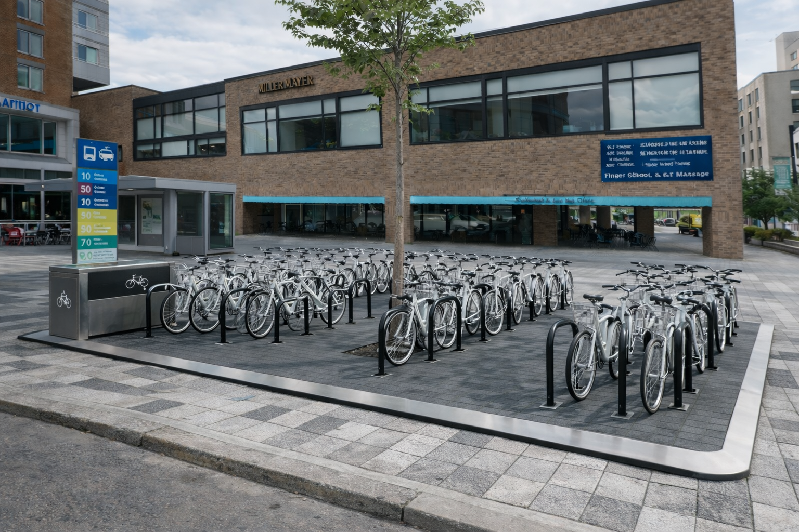
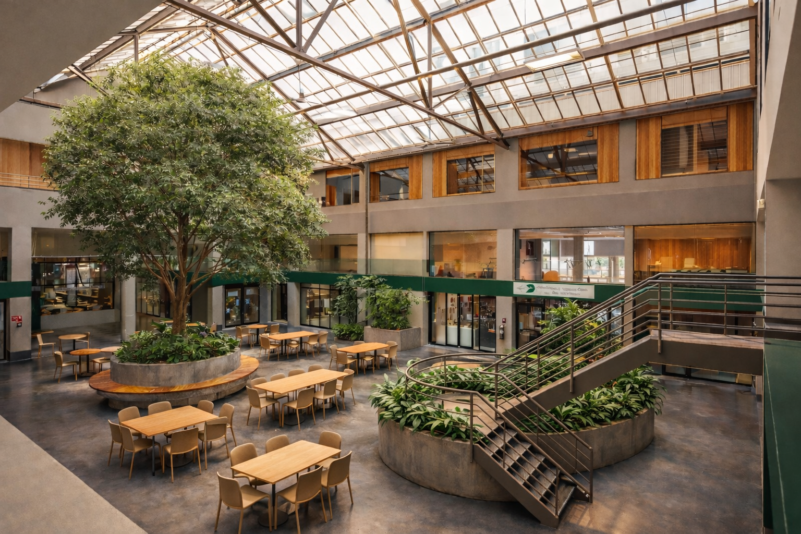

Student-Centered Downtown Revitalization Study
A systems design study analyzing how Cornell students interact with the Ithaca Commons and identifying opportunities to strengthen downtown engagement
Overview

This project examined how the Ithaca Commons could be redesigned to better engage Cornell University students. Although the Commons serves as Ithaca’s primary pedestrian downtown space, members of the Downtown Ithaca Alliance have identified a persistent challenge: many students rarely visit the area or view it as part of their everyday routine. Over the course of this seven-week study, our team investigated the causes of this disconnect through observation, user engagement, and spatial analysis. The objective was to identify barriers to student participation and develop design opportunities that could make the Commons feel more welcoming, visible, and integrated into student life.
Using a systems design thinking approach, we investigated how different groups of students interact with the Commons and what barriers prevent them from engaging with the space. Rather than assuming a single solution, we analyzed the Commons as a complex social system involving transportation, visibility of businesses, public space design, and student behavior patterns.
Empathy Fieldwork

The first phase of the project focused on empathy fieldwork, where our team conducted observations and interviews with people using the Commons. We explored the space ourselves, spoke with students and visitors, and recorded behaviors, needs, and unexpected findings.
These field experiences were organized into episodes, which captured interactions such as student visits, interviews, and observations. From these episodes we extracted Needs, Insights, and Surprises (NIS) — short statements that summarized the motivations and barriers students experience when interacting with the Commons.
Across all of our fieldwork, a recurring theme emerged: students often said that once they arrived at the Commons it was enjoyable to stay and explore, but getting there and discovering what exists was difficult. Many students also described the Commons as something they visit for specific events rather than a spontaneous place to spend time.
System Modeling
To better understand these patterns, our team modeled the system using systems engineering tools. We categorized student populations into four primary groups:
- Undergraduate domestic students
- Undergraduate international students
- Graduate domestic students
- Graduate international students
Across these groups, we unpacked 56 episodes and identified over 200 Needs, Insights, and Surprises that describe how students experience the Commons.

Episode Unpacking & Needs Modeling
We also developed personas representing different student lifestyles and motivations. These personas helped us move beyond generalizations and focus on how specific types of students interact with the space. For example:
- Students seeking a third space outside of dorms and libraries
- International students expecting visible urban activity and cultural signals
- Graduate students looking for low-pressure social environments and affordable food options
By mapping these personas and their interactions with the Commons, we were able to identify systemic friction points such as transportation barriers, lack of visible activity, and limited awareness of businesses.

Personas Context Diagram
Brainstorming & Prototyping
After understanding the system, we moved into a collaborative brainstorming phase. Our team generated a wide range of potential interventions and organized them using a Go / See / Do framework, which focused on improving:
- How students travel to the Commons
- What they see and discover once they arrive
- What activities give them reasons to stay
These ideas were then evaluated through student feedback sessions where we tested how well different concepts resonated with the personas we developed earlier.
Several concepts consistently received strong validation, including:
- Improved TCAT transit information to reduce friction in traveling between campus and the Commons
- Micromobility hubs such as e-bike docks to support first- and last-mile transportation
- Improved directories and signage to help students discover businesses and second-floor spaces
- Activity-based attractions such as paddle sports, workshops, and public art installations that give students a clear reason to visit

TCAT Information Improvement Concept

E-Bike Dock Concept
Key Insight
One of the most important insights from the project was that the Commons is not lacking destinations — rather, students lack clear signals that something is happening there.
Many successful pedestrian downtowns create visible energy through signage, events, recognizable brands, and interactive public spaces. By introducing clearer navigation, activity anchors, and better connections to campus transportation, the Commons could become a natural extension of student life rather than an occasional destination.
Ideas Along the Way
Throughout the process, I utilized AI models to generate mock images of concepts I was curious about to help explain and visualize my ideas. While most of these never came to fruition, I wanted to include some of my favorites because I found them super cool.
The images below are all generated using AI:

Ithaca Bus Terminal, First Floor Lounge

Ithaca Bus Terminal, Second Floor Museum

Improved Ithaca Bikeshare Dock

Renovated Center Ithaca Interior
Final Report
The complete presentation describing our research process, systems modeling, and design proposals is available below.